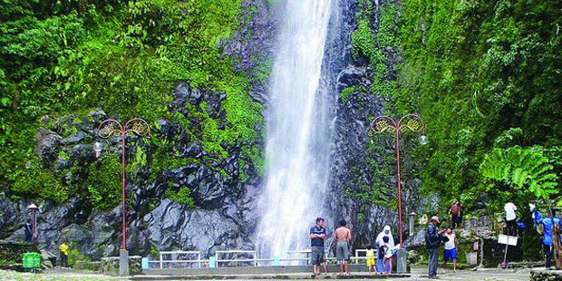

My Favorite Thing

Nasi Goreng
Nasi goreng adalah sebuah makanan berupa nasi yang digoreng dan diaduk dalam minyak goreng atau margarin, biasanya ditambah kecap manis, bawang merah, bawang putih, asam jawa, lada dan bumbu-bumbu lainnya, seperti telur, ayam, dan kerupuk.
Baca Selanjutnya →Air Terjun Sedudo
Air Terjun Sedudo adalah sebuah air terjun dan obyek wisata yang terletak di Desa Ngliman Kecamatan Sawahan, Kabupaten Nganjuk, Jawa Timur. Jaraknya sekitar 30 km arah selatan ibukota kabupaten Nganjuk. Berada pada ketinggian 1.438 meter dpl.
Baca Selanjutnya →


W
Drama Korea W ini menyajikan kisah kehidupan seorang pria dan wanita dengan layar belakang pendidikan, pekerjaan dan lingkungan yang berbeda meskiun sama-sama tinggal di kota yang sama
Baca Selanjutnya →